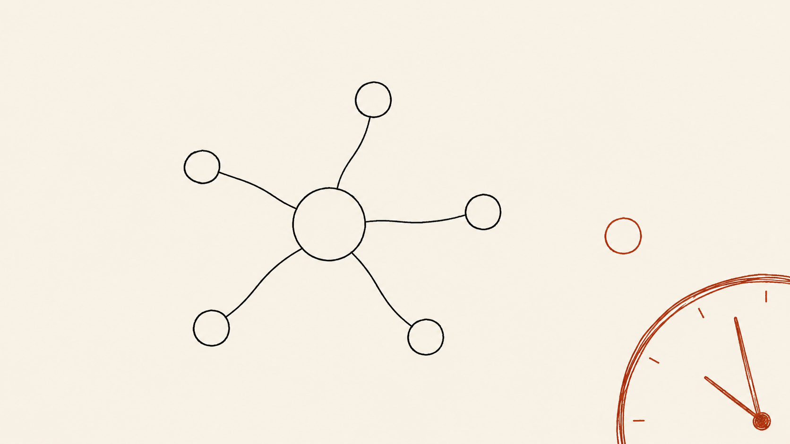

FintechThe BCEAO Blinked. Wave Didn't Move.
The central bank pushed its PI-SPI deadline by ninety days rather than force Wave onto the platform. What that says about negotiating leverage in WAEMU fintech.
Read Analysis →
221K PI-SPI aliases vs tens of millions of wallets